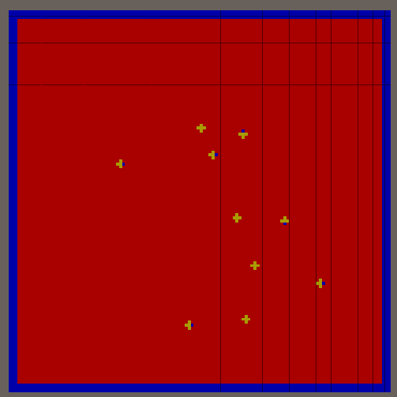
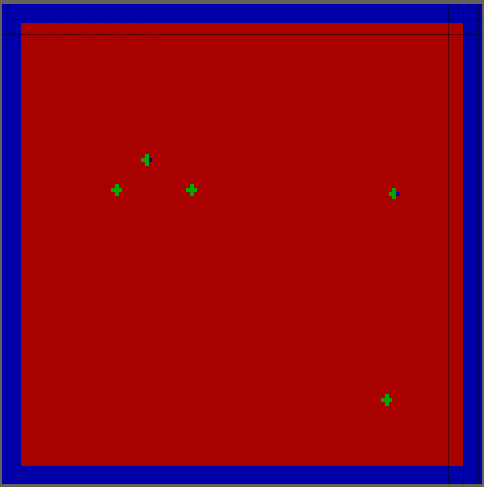
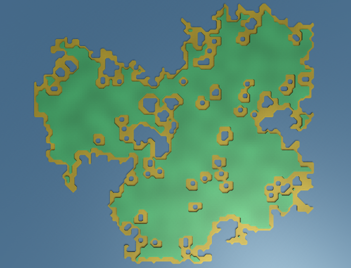
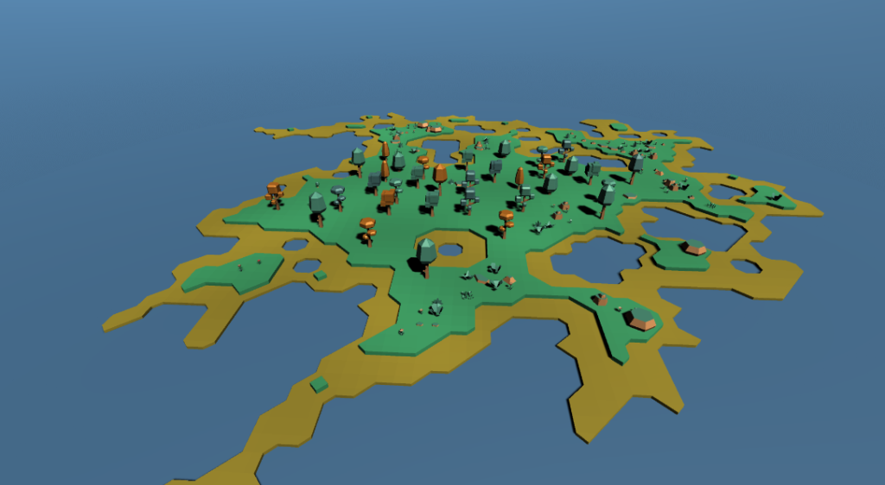

Will Pete Eat It?
Will Pete Eat It? is a third person survival game, where the player has to find objects around the island and feed them to Pete to see if he survives. The idea for the game was that we'd proccedural generate islands, then distribute objects across those islands and that'll be the whole game world. I was tasked with generating the islands.
Island Generation
Island generation is done using cellular automata, picking several random points across the map to start at, then adding its 3 neigbours to a list to be searched through, which is repeated. Each Neigbour has a percentage to becoming landmassing, starting at 100% but decressing slowly the further it itterates across the map, which is what causes the island to not extend fully. I wrote a whole blog post during the jam about how I generate the Islands, which can be read here. I tried to write an update post every few hours, which are still all avaliable to read on the site among other jammers blog posts too.
As you can see in the gif above, there are points where you get a block of water in the middle of the island. Now this could be a representation of a river, and with more time during the Jam I could of gone about connecting them all to the sea, however as they currently stand they we're in the way, so I added a function to remove bodys of water that we're connected to at least two other neigbours. A more rigerous method for remove water in land would of been to count how many water cells were connected together, and if they were bellow a threshold to remove them all, but I wanted to implement something quick for the moment so that I could at least have fully implemented the island generation before coming back to it later and fixing it if there was still time. Also at this point I also marked cells near water as beaches to create a transition between the water and land.
Now that I had the data for generating islands, I needed to convert it into a mesh. I decided to use the marching squares algorithm to add some texture to the mesh, instead of just 90 degree stright lines. Once I had the top plane created with the marching squares algorithm, I just extended the sides down on edges with gave it a 3d effect. I did this for the main land as well as the beaches, but I lowered the beaches down a bit to give the world some depth.
Envioment
As well as creating the islands I also had to populat it with an envioment for the player. For objects like trees, I generated a few trees as a starting possition, then select locations around those trees to generate a new tree in, which is then repeated n times. This creates clusters of trees that spawn close together, rather than a method like randomly scattering them around the island. Rocks and bushes then spawn in any random space that is left around the island and don't follow any generation rules.
Reflection
Overall I'm pretty happy with what I did towards this Jam submissioin, the game however in some places lacks some game design. For example you have to eat food to keep going, but the game has no UI to tell the player how to interact with the main pot. Also there is no visible time limit in which you have to eat food in to keep alive, and having a visible timer for the player to see could help keep the pace of the game going, as it just feels rather flat in places.